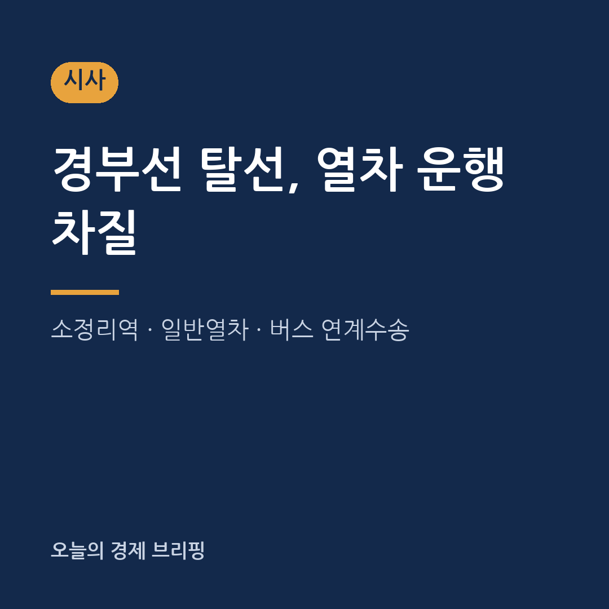
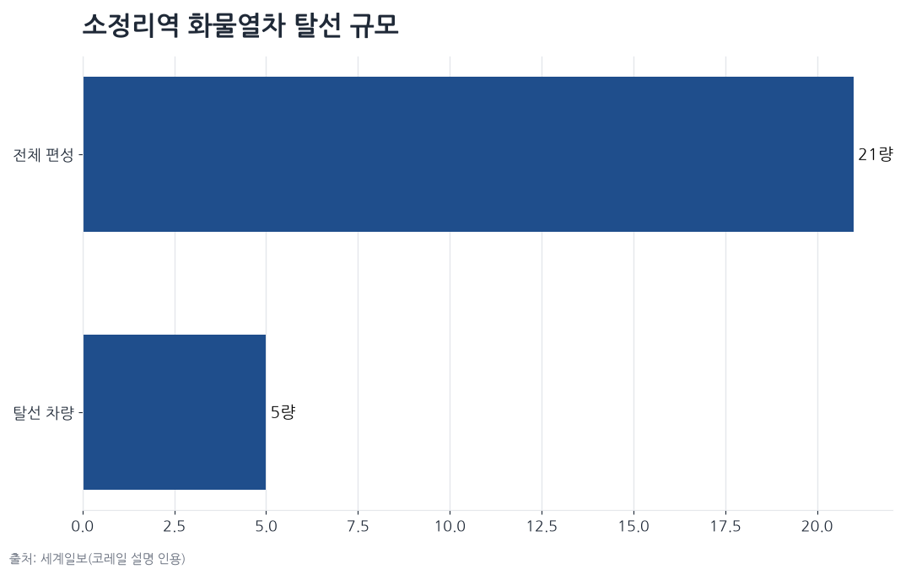

2026-11-21-1221-naver 발행 키트 · 이 페이지는 검색에 노출되지 않습니다.
제목
카테고리
시사태그
본문 (그림·표 포함)
휴대폰 블로그 앱에서는 그림이 같이 붙지 않을 수 있어요. 그때는 [글자만 복사] 후 아래 이미지를 저장해 [그래프1]·[표1] 자리에 첨부하세요.

주말 아침에 기차 타고 어디 가려던 분들, 오늘 일정이 꼬여서 당황하셨죠. 경부선에서 화물열차 탈선 사고가 나면서 일반열차 운행에도 차질이 생겼어요. 오늘은 내가 타야 하는 열차가 어떻게 되는지 위주로 정리해 봤어요.
▶ 아침 5시 반쯤, 소정리역에서 있었던 일
21일 오전 5시 37분쯤 세종시 소정면에 있는 경부선 소정리역으로 들어오던 화물열차가 선로를 벗어났어요. 코레일 설명으로는 열차 21량 가운데 5량이 탈선했다고 해요.
다행히 사람이 다친 곳은 없는 것으로 파악됐어요. 하지만 전차선(열차에 전기를 공급하는 공중 전선)이 끊어지면서 천안과 전의 사이 구간에 전기가 끊겼어요.

▶ 그래서 일반열차가 멈췄어요
전기가 안 들어오니 이 구간으로는 열차가 다닐 수가 없죠. 천안에서 대전 사이 운행이 중단됐고, 광주에서 용산으로 가는 일반열차도 영향을 받았어요.
현장에서는 크레인 등을 동원해서 탈선한 열차를 치우고 끊어진 전차선을 걷어내는 작업이 이어졌다고 해요. 복구가 언제 끝날지는 제가 본 자료에서는 확인되지 않았어요.
▶ 코레일이 마련한 대체 수단
코레일은 천안역·조치원역과 대전·서대전역을 오가는 버스로 승객을 이어 주는 연계수송을 시작했어요. 일부 일반열차는 서울·용산에서 천안까지, 그리고 대전·서대전에서 부산·광주·목포까지 구간을 나눠서 반복 운행한다고 해요.
쉽게 말해 열차가 끊긴 가운데 토막만 버스로 건너가는 방식이에요. 시간은 평소보다 더 걸릴 수밖에 없어요.
기차 타기 전 확인할 것
| 확인 항목 | 어디서 확인 | 언제 |
|---|---|---|
| 내 열차 운행·지연 여부 | 코레일 앱·역 안내 | 집을 나서기 전 |
| 천안·대전 구간을 지나는지 | 예매 내역의 경로 | 출발 전 |
| 버스 연계수송 이용 장소 | 천안·조치원·대전·서대전역 | 역 도착 후 |
| 환불·변경 가능 여부 | 코레일 앱·고객센터 | 일정이 어긋날 때 |
출처: 세계일보, 연합뉴스 기사를 바탕으로 정리
▶ 정부도 경계 수준을 올렸어요
국토교통부는 이번 사고와 관련해 철도사고 재난 위기경보를 '주의' 단계로 올렸어요. 사고 자체는 화물열차였지만, 여객 열차 운행에도 차질이 번진 상황이에요.
주말이라 시험을 보러 가던 수험생들도 걱정이 컸다는 보도가 나왔어요. 오늘 시험이나 면접, 약속이 있는 분은 평소보다 훨씬 여유 있게 움직이는 게 안전해요.
▶ 한 줄 정리
경부선 천안~대전 구간 일반열차가 멈췄고, 버스 연계수송으로 이어 주고 있어요. 출발 전에 내 열차 운행 여부부터 꼭 확인하세요.
혹시 오늘 이 일로 일정이 바뀌신 분 계신가요? 어떻게 해결하셨는지 댓글로 알려 주세요.
출처 (본문 맨 아래에 붙여넣기 권장)
- 세계일보, 수험생들 ‘발 동동’…경부선 화물열차 탈선에 일반열차 운행 중단, https://www.segye.com/newsView/20261121503385 - 세계일보, [속보] 코레일, 천안∼조치원∼대전·서대전 구간 버스 연계수송, https://www.segye.com/newsView/20261121503773 - 연합뉴스, 국토부, 경부선 화물열차 탈선에 철도사고 위기경보 '주의', https://www.yna.co.kr/view/AKR20261121032200003 - 연합뉴스, 화물열차 탈선 여파…광주발 용산행 일반열차 운행 중단, https://www.yna.co.kr/view/AKR20261121029400054